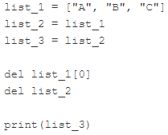
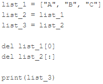

Code
hat_list = [1, 2, 3, 4, 5]
hat_list.insert(0, int(input()))
del hat_list[len(hat_list) - 1]
print(len(hat_list))
print(hat_list)5
[6, 1, 2, 3, 4]Мета: освоїти роботу зі списками
Попередньо потрібно опрацювати лекцію 5.
len(), append(), insert(), sort(), reverse().dell.in та not in.Жив-був капелюх. У капелюсі не було кролика, натомість був список із п’яти чисел: 1, 2, 3, 4 та 5.
Ваше завдання:
Чи готові до цього випробування?
hat_list = [1, 2, 3, 4, 5]
hat_list.insert(0, int(input()))
del hat_list[len(hat_list) - 1]
print(len(hat_list))
print(hat_list)5
[6, 1, 2, 3, 4]Поряд з можливістю реалізувати будь-який алгоритм сортування, у python існують вбудовані методи для сортування списків.
my_list = [1, 7, 23, 34, 0]
my_list.sort()
print(my_list)
my_list.reverse()
print(my_list)[0, 1, 7, 23, 34]
[34, 23, 7, 1, 0]Написати програму сортування списку у порядку зростання методом бульбашки.
my_list = [1, 7, 23, 34, 0]
prap = True
k = len(my_list) - 1
while prap:
prap = False
for i in range(k):
if my_list[i] > my_list[i + 1]:
my_list[i], my_list[i + 1] = my_list[i + 1], my_list[i]
prap = True
k -= 1
print(my_list)[0, 1, 7, 23, 34]in та not inУявіть список - не дуже довгий, не дуже складний, просто звичайний список, що містить деякі цілі числа. Деякі з цих чисел можуть повторюватись, і це ключ до розгадки. Ми не хочемо повторень. Ми хочемо, щоб їх видалили.
Ваше завдання – написати програму, яка видаляє всі дублікати чисел зі списку. Ціль полягає в тому, щоб скласти список, в якому всі числа зустрічаються не більше одного разу.
припустимо, що вихідний список жорстко закодований всередині коду - Вам не потрібно вводити його з клавіатури. Звичайно, Ви можете покращити код і додати частину, яка може вести діалог з користувачем і отримувати від неї всі дані..
ми рекомендуємо Вам створити новий список як тимчасову робочу область - вам не потрібно оновлювати список in situ.
Ми не надали тестових даних, оскільки було б надто просто. Натомість ви можете використовувати наш скелет.
my_list = [1, 2, 4, 4, 1, 4, 2, 6, 2, 9]
my_list2=[]
for i in my_list:
if i not in my_list2:
my_list2.append(i)
print("The list with unique elements only:")
print(my_list2)The list with unique elements only:
[1, 2, 4, 6, 9]Уявіть, що Ви розробляєте програмне забезпечення автоматичної метеостанції. Прилад фіксує температуру повітря щогодини та робить це протягом місяця. Це дає Вам загалом 24 × 31 = 744 значення. Спробуємо скласти список, здатний зберігати ці результати.
from random import randint
temps = [[randint(0,20) for h in range(24)] for d in range(31)]
[print(i) for i in temps][12, 5, 2, 20, 6, 8, 19, 2, 18, 14, 6, 8, 8, 6, 13, 2, 10, 18, 17, 9, 19, 4, 1, 15]
[20, 14, 0, 1, 10, 4, 6, 14, 7, 3, 4, 19, 6, 12, 18, 8, 19, 10, 19, 2, 13, 0, 19, 15]
[1, 12, 14, 3, 8, 1, 18, 3, 0, 7, 20, 20, 19, 20, 16, 7, 4, 14, 4, 18, 17, 3, 17, 12]
[9, 8, 5, 0, 16, 12, 19, 3, 19, 14, 11, 9, 5, 15, 20, 7, 2, 8, 6, 0, 16, 3, 18, 16]
[5, 1, 10, 20, 5, 12, 19, 18, 9, 16, 1, 14, 12, 3, 3, 7, 19, 1, 0, 7, 1, 15, 11, 0]
[2, 19, 10, 15, 7, 2, 2, 13, 4, 2, 5, 14, 11, 3, 5, 9, 0, 4, 20, 14, 9, 3, 7, 6]
[10, 3, 0, 3, 0, 11, 12, 19, 1, 8, 6, 5, 1, 13, 11, 13, 6, 9, 20, 15, 5, 19, 20, 20]
[12, 14, 5, 17, 11, 5, 13, 19, 12, 6, 7, 19, 4, 18, 0, 13, 7, 6, 20, 11, 12, 0, 7, 2]
[18, 14, 4, 4, 18, 9, 0, 13, 16, 14, 5, 8, 18, 12, 12, 20, 10, 15, 20, 6, 1, 6, 1, 3]
[8, 9, 0, 3, 20, 2, 8, 2, 6, 13, 12, 17, 2, 16, 8, 1, 7, 18, 3, 1, 15, 15, 7, 5]
[12, 19, 4, 14, 3, 7, 14, 17, 0, 0, 18, 19, 8, 3, 2, 12, 4, 20, 0, 20, 15, 3, 10, 1]
[13, 11, 8, 8, 0, 18, 19, 16, 8, 5, 4, 14, 11, 14, 9, 11, 9, 16, 12, 16, 2, 6, 18, 1]
[3, 16, 8, 6, 18, 7, 17, 11, 16, 10, 1, 19, 20, 7, 16, 10, 8, 12, 15, 11, 17, 20, 7, 8]
[15, 8, 6, 19, 8, 16, 5, 3, 5, 11, 8, 1, 6, 11, 7, 0, 13, 16, 5, 13, 12, 3, 8, 16]
[3, 18, 15, 7, 3, 12, 18, 17, 8, 4, 12, 9, 15, 5, 7, 12, 5, 17, 17, 10, 17, 7, 14, 3]
[8, 15, 12, 1, 16, 12, 17, 13, 4, 0, 5, 20, 13, 0, 7, 8, 8, 11, 4, 4, 0, 13, 6, 1]
[18, 14, 13, 4, 9, 3, 19, 11, 19, 2, 4, 4, 8, 15, 16, 9, 18, 0, 15, 1, 12, 5, 11, 14]
[11, 15, 19, 4, 8, 1, 5, 16, 5, 15, 13, 4, 20, 5, 15, 19, 19, 2, 11, 16, 17, 7, 7, 18]
[6, 17, 0, 7, 17, 10, 19, 0, 6, 16, 14, 1, 14, 10, 8, 20, 18, 12, 8, 5, 11, 4, 8, 11]
[7, 3, 6, 10, 2, 5, 10, 1, 5, 14, 8, 2, 13, 12, 5, 6, 19, 6, 5, 3, 7, 7, 20, 7]
[5, 2, 20, 6, 7, 4, 5, 18, 12, 8, 12, 9, 10, 12, 5, 12, 0, 18, 17, 11, 1, 18, 2, 5]
[8, 0, 8, 4, 6, 4, 16, 11, 17, 7, 19, 17, 19, 0, 5, 2, 9, 12, 20, 0, 16, 7, 14, 13]
[10, 12, 1, 11, 7, 14, 9, 9, 0, 2, 2, 7, 3, 11, 18, 19, 19, 5, 1, 3, 16, 10, 11, 17]
[2, 5, 14, 20, 4, 17, 0, 7, 8, 19, 15, 18, 0, 15, 14, 4, 1, 9, 9, 10, 18, 2, 2, 3]
[16, 16, 14, 1, 10, 13, 5, 7, 4, 11, 18, 6, 8, 2, 20, 18, 18, 0, 16, 10, 7, 5, 8, 8]
[0, 5, 13, 8, 8, 16, 18, 5, 7, 9, 3, 20, 2, 14, 15, 16, 3, 3, 16, 19, 3, 18, 7, 1]
[3, 14, 16, 14, 5, 5, 7, 6, 7, 19, 8, 3, 19, 11, 3, 0, 2, 20, 2, 4, 15, 18, 1, 18]
[1, 11, 17, 17, 16, 10, 10, 8, 7, 6, 18, 5, 7, 11, 11, 19, 2, 1, 7, 4, 5, 8, 6, 4]
[20, 16, 19, 6, 15, 13, 12, 1, 14, 5, 6, 11, 1, 12, 12, 19, 1, 11, 12, 15, 10, 19, 10, 4]
[16, 6, 14, 10, 1, 20, 10, 15, 8, 12, 11, 7, 6, 12, 8, 15, 16, 20, 6, 1, 12, 15, 14, 7]
[6, 15, 4, 3, 3, 0, 7, 10, 16, 6, 20, 18, 20, 18, 10, 0, 19, 10, 5, 20, 18, 17, 14, 7][None,
None,
None,
None,
None,
None,
None,
None,
None,
None,
None,
None,
None,
None,
None,
None,
None,
None,
None,
None,
None,
None,
None,
None,
None,
None,
None,
None,
None,
None,
None]Визначимо середньомісячну полуденну температуру. Складіть усі 31 покази, записані опівдні, та поділіть отриману суму на 31. Ви можете припустити, що спочатку зберігається північна температура. Ось відповідний код:
temps = [[randint(0,20) for h in range(24)] for d in range(31)]
total = 0.0
for day in temps:
total += day[11]
average = total / 31
print("Average temperature at noon:", average)Average temperature at noon: 11.709677419354838Погляньте на шахівницю. Кожне поле містить кілька індексів, які необхідно вказати для доступу до вмісту клітини:

Напишіть код, використоувуючи генератори списків, який створює матрицю 8х8 з пустими клітинками (пуста клітинка задається як “_“) для задання шахівниці і розставте чотири тури по кутках шахівниці
temps = [["_" for h in range(8)] for d in range(8)]
temps[0][0], temps[0][7], temps[7][0], temps[7][7] = "тура","тура","тура","тура"
[print(i) for i in temps]['тура', '_', '_', '_', '_', '_', '_', 'тура']
['_', '_', '_', '_', '_', '_', '_', '_']
['_', '_', '_', '_', '_', '_', '_', '_']
['_', '_', '_', '_', '_', '_', '_', '_']
['_', '_', '_', '_', '_', '_', '_', '_']
['_', '_', '_', '_', '_', '_', '_', '_']
['_', '_', '_', '_', '_', '_', '_', '_']
['тура', '_', '_', '_', '_', '_', '_', 'тура'][None, None, None, None, None, None, None, None]Виконати завдання 1-4 наведені вище у цьому зошиті.
Створити файл lab_5_StudentLastName.py з написаним кодом.
Закомітити файл у локальний репозиторій.
Відправити (“запушити”) поточну версію Git-проєкта у віддалений репозиторій на GitHub.
Звіт має складатися з файлу (за основу взяти цей Python-зошит) lab_5_StudentLastName.ipynb. (Можливі якісь додакові файли)
Який вивод наступного фрагмента?

Який вивод наступного фрагмента?

Який вивод наступного фрагмента?

Який вивод наступного фрагмента?

list_1 = ["A", "B", "C"]
list_2=list_1
list_3=list_2
del list_1[0]
del list_2[0]
print (list_3)['C']list_1 = ["A", "B", "C"]
list_2=list_1
list_3=list_2
del list_1[0]
del list_2
print (list_3)['B', 'C']list_1 = ["A", "B", "C"]
list_2=list_1
list_3=list_2
del list_1[0]
del list_2[:]
print (list_3)[]list_1 = ["A", "B", "C"]
list_2=list_1[:]
list_3=list_2[:]
del list_1[0]
del list_2[0]
print (list_3)['A', 'B', 'C']